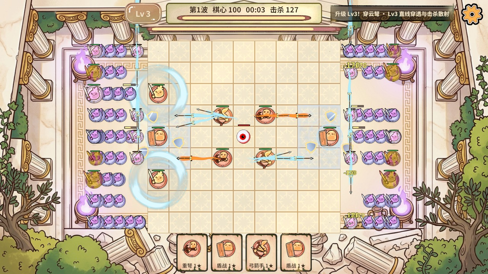
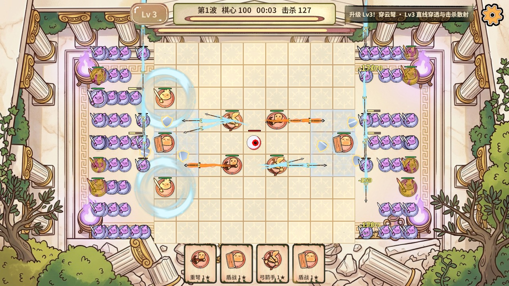

性能结果
指标各自取每版三轮的中位数。相对下降按（旧值−新值）÷旧值计算。正数代表下降，负数代表上升。毫秒和上传量的相对变化以百分比表示。有位移帧比例与仅上传位置帧比例的差用百分点。
| 指标 | 上一版 bbbc9b23 | 最新版 30551529 | 新版减旧版 | 相对下降 |
|---|---|---|---|---|
| 整帧平均（ms） | 53.412 | 33.594 | -19.818 | +37.10% |
| 整帧 P50（ms） | 35.167 | 23.879 | -11.288 | +32.10% |
| 整帧 P95（ms） | 124.551 | 78.877 | -45.674 | +36.67% |
| 整帧 P99（ms） | 381.614 | 220.611 | -161.003 | +42.19% |
| 敌人＋血条顶点提交（KiB／帧） | 12.880 | 8.869 | -4.011 | +31.14% |
| 敌人＋血条顶点提交（MiB／秒） | 0.243 | 0.258 | +0.015 | -6.12% |
| 敌人＋血条顶点提交（字节／绘制方块） | 144.00 | 84.14 | -59.86 | +41.57% |
| 其中位置（KiB／帧） | 4.293 | 4.590 | +0.296 | -6.91% |
| 其中颜色＋UV（KiB／帧） | 8.587 | 3.666 | -4.921 | +57.30% |
每轮采样帧数的中位数为 191 → 295。本机新版的单位时间提交量仍上升 6.12%。 仅提交位置的帧占比由 0.00% 到 58.64%，变化 +58.64 个百分点。
同场景与采样口径
Unity 2022.3.15f1c1 Editor Play · Intel(R) Iris(R) Xe Graphics · Direct3D11 · 1920 × 1080 · Ultra · PC AssetBundle。资源清单 SHA-256 025a0f892a36456f9e470f011532fb6b7727e5200786defa011ab66b1b236d50。
同一在线编辑器顺序运行 A、B，每版 3 轮。RevMCP 从大厅经 endless.enter 进入 0 号阵型的固定种子 1101 隔离局，调用 endless.stress 按真实出生逻辑注入 240 敌。逻辑步长 0.100 秒，预热至逻辑 2.5 秒阈值，实际从 2.6 秒采样至 12.5 秒。敌人可继续生成、移动、进盘和死亡，计时轮的首表现帧均已到 242 敌。测量轮关闭垂直同步与帧率上限，采集 Unity Time.unscaledDeltaTime，连拍独立运行，结束恢复原设置。
两版给相同入口装上临时仅 Editor 探针，在身体和血条的实际 Mesh.SetVertexBufferData 调用后计字节。位置每顶点 12 字节，颜色和 UV 合计 24 字节，每个四边形四顶点。统计范围为 Unity API 的提交载荷，物理总线流量、GPU 单项计时、索引和其他网格不在此测量范围。测完恢复提交源码并重编。
画面与轨迹
同一实际绘制的敌人编号 9，比较第 0 至 95 帧。有位移帧的比例变化 +84.21 个百分点。坐标来自已提交方块对角顶点的中点，位移阈值为 0.00001 格。
| 同一敌人实际提交的中心点 | 上一版 | 最新版 |
|---|---|---|
| 有位移的相邻帧 | 15/95（15.79%） | 95/95（100.00%） |
| 单帧位移 P95（格） | 0.06300 | 0.01050 |
| 最大单帧位移（格） | 0.06300 | 0.01050 |
| 本段累计位移（格） | 0.94500 | 0.99750 |


逐轮性能与业务证据
全部采样轮终点的敌数、击杀、分数、棋心、随机状态和三类战斗回执均一致。 按帧指标受采样时机和当前可见方块数影响，按绘制方块归一化的数据也同时列出。
| 版 | 轮 | 秒 | 样本 | 均值 ms | P95 ms | P99 ms | 最大 ms | 超过 16.667 ms | 提交字节合计 | KiB／帧 | 只传位置 |
|---|---|---|---|---|---|---|---|---|---|---|---|
| bbbc9b23 | 1 | 10.191 | 191 | 53.412 | 124.551 | 442.869 | 499.588 | 191 | 2,597,760 | 13.282 | 0.00% |
| bbbc9b23 | 2 | 10.136 | 158 | 64.180 | 176.651 | 381.614 | 534.067 | 158 | 1,942,128 | 12.004 | 0.00% |
| bbbc9b23 | 3 | 10.087 | 198 | 50.884 | 119.930 | 354.823 | 493.992 | 197 | 2,611,440 | 12.880 | 0.00% |
| 30551529 | 1 | 9.904 | 295 | 33.594 | 78.877 | 220.611 | 319.414 | 220 | 2,679,264 | 8.869 | 58.64% |
| 30551529 | 2 | 10.387 | 154 | 66.773 | 170.589 | 481.378 | 615.439 | 154 | 1,661,280 | 10.535 | 27.27% |
| 30551529 | 3 | 9.977 | 334 | 29.488 | 72.098 | 148.462 | 314.722 | 275 | 2,751,552 | 8.045 | 61.68% |
| 版 | 轮 | 首表现帧敌数 | 逻辑秒 | 逻辑步 | 窗口内敌数 | 终点敌数 | 敌数均值 | 身体方块均值 | 血条方块均值 | 攻击／伤害／死亡回执 | 击杀／分数／棋心 |
|---|---|---|---|---|---|---|---|---|---|---|---|
| bbbc9b23 | 1 | 242 | 2.600→12.500 | 40→139 | 37–264 | 40 | 96.2 | 85.7 | 8.7 | 413/580/295 | 293/323/100 |
| bbbc9b23 | 2 | 242 | 2.600→12.500 | 38→137 | 37–264 | 40 | 87.8 | 77.4 | 7.9 | 413/580/295 | 293/323/100 |
| bbbc9b23 | 3 | 242 | 2.600→12.500 | 38→137 | 37–264 | 40 | 93.0 | 82.7 | 8.9 | 413/580/295 | 293/323/100 |
| 30551529 | 1 | 242 | 2.600→12.500 | 36→135 | 37–264 | 40 | 112.5 | 102.0 | 9.0 | 413/580/295 | 293/323/100 |
| 30551529 | 2 | 242 | 2.600→12.500 | 40→139 | 37–264 | 40 | 93.6 | 83.3 | 8.5 | 413/580/295 | 293/323/100 |
| 30551529 | 3 | 242 | 2.600→12.500 | 32→131 | 37–264 | 40 | 99.5 | 89.2 | 8.7 | 413/580/295 | 293/323/100 |
适用范围与复验
这是当前 Windows Editor、资源模式和指定 240 敌夹具的实测。整帧耗时包含编辑器调度，逐轮离散程度见上表。不同设备、独立 Player、其他负载及 GPU 单项耗时需对应环境数据。
退场和完整最新源码的验收见自动化测试报告。